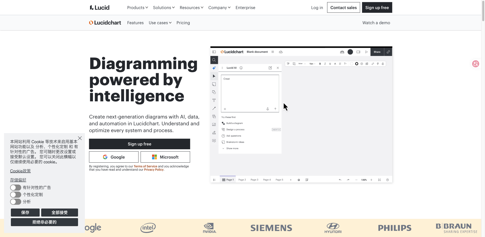

把系统架构和业务流程画成可多人协作、可绑定数据的企业图表。
复刻一张典型的「订单系统架构图」，含 Lucid AI 浮层
Lucidchart 的视觉语言：蓝灰色填充 + 深蓝描边的直角矩形，1.5px 描边，正交折线配小实心箭头，容器用虚线大框标注 VPC。它不追求手绘感，追求的是“像工程文档”。

云端协作图表工具，定位接近“企业版 Visio”。覆盖流程图、系统架构、UML、ER、组织架构等，卖点是把图形和数据、自动化绑在一起：数据驱动的图形、Cloud Accelerator、Process Accelerator，以及 Lucid AI 生成。
协作是核心：多人实时编辑、评论、版本历史、团队模板库，都属于付费层的价值。